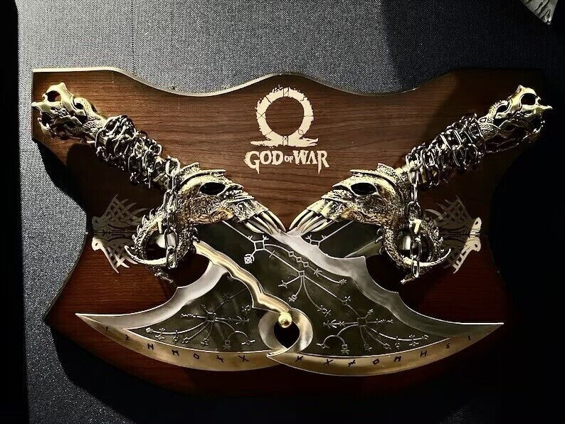
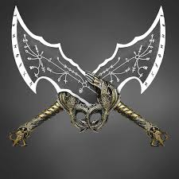
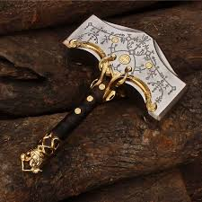

Have you ever wondered what this project is used for? Our project is a custom keychain holder inspired by the video game God of War. It can be used to hold keys, AirPods, and other small accessories that can be attached to a keychain.
Before deciding on our final design, our team discussed several ideas, including characters such as Spider-Man and Mario. After comparing different concepts, we chose a God of War theme because it was unique, creative, and connected to Norse mythology.
Design Inspiration


These images were our main inspiration throughout the design process. We studied their shape, style, and details to help create a keychain holder that represents the game while remaining functional and practical.
Alternative Design
We also considered creating a design based on Mjölnir, the legendary hammer from Norse mythology. Although we liked the idea, we ultimately selected the God of War blades because they offered a more detailed and visually interesting design.

How We Made It
To create this project, our group worked together to brainstorm ideas, choose a final design, and develop a model that would be both attractive and useful. We learned about planning, design, creativity, and teamwork while completing this project.
Conclusion
This STEM project allowed us to apply creativity and problem-solving skills while designing a product inspired by a popular video game. We are proud of the final result and hope you enjoy learning about our project.